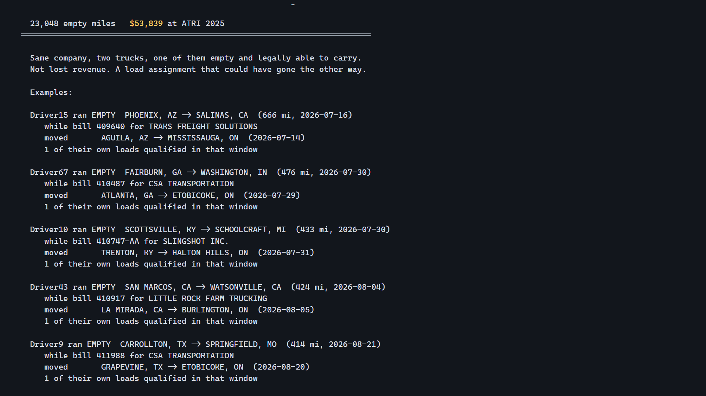

Northbound
Your truck already drove that lane. Empty. Northbound finds the freight it could legally have carried.
A load board that knows which US freight a Canadian truck is allowed to haul. Built on Roadstar Trucking's own dispatch history.
Their data said I was wrong
I assumed a Canadian carrier's problem is coming home empty from the US Midwest. Roadstar's own completed dispatch history, 10,479 legs over about two months, says otherwise.
| Where the empty miles are | Legs | Miles |
|---|---|---|
| Repositioning inside the US | 778 | 126,874 |
| Inside Canada | 2,847 | 65,738 |
| Crossing south empty | 92 | 27,979 |
| Coming home empty | 6 | 2,044 |
Six empty legs home in two months. They are good at loading for home. The empty running is between US loads, and whether any of it could have carried freight is a legal question, not a routing one.
The rule is directional
A Canadian truck may not haul US point-to-point freight. Every distance optimiser will offer it anyway. But the regulation is not a flat no.
19 CFR 123.14(c)(1): carriage "in the general direction of an export move or as part of the return of the vehicle to its base country shall be considered incidental to its engagement in international traffic."
Verified against Cornell LII and govinfo independently.
Amber exists because the driver's B-1 admission is a second, stricter layer than the equipment rule. The two disagree on exactly one commercially interesting case, so Northbound surfaces it with both citations and hands the decision to the carrier's broker. It names the provision. It is not legal advice.
The headline
And it repeats, which is what makes it fixable with standing agreements rather than luck: Fairburn GA → Walton KY ran empty 10 times, Morris IL → Richmond IN 13, Scottsville KY → Walton KY 11.
The part I did not expect
120 times in two months, a Roadstar truck ran empty toward the border within 150 km and 48 hours of a Roadstar load heading to Ontario.
Fairburn is twenty miles from Atlanta. Same company, two trucks, one of them empty and legally able to carry. Every order in the book was hauled, so this is not lost revenue: it is a load assignment that could have gone the other way. The 150 km / 48 h thresholds are mine, so the sensitivity is published rather than a single tuned number; at the most conservative corner, 50 km and 12 hours, it is still 30 legs and $16,000.

Paste the offer as it arrived
GLM 5.2 on SPUR reads it. The law decides. A model should never be the thing asserting what a regulation permits.
A load board that only ever says yes will eventually get a driver turned around at the bridge. Northbound says no, names the provision, and names the exposure.
The clock changes at the bridge
A driver leaving Milton for Chicago runs under 49 CFR 395.3 south of the border and SOR/2005-313 north of it. Roadstar's own TMS tracks both, in separate columns per driver. 88% of their drivers carry a materially different figure, mean gap 18.3 hours.
His board says 53 hours. He has 11 the moment he crosses. Border wait is priced live from CBP's public feed, commercial and FAST lanes separately, and because the rule asks for an interruption in driving status rather than off-duty time, a wait over 30 minutes is credited as the break he already owed.
What the model contributes, measured
Every entry at a sponsored hackathon says the sponsor's product was essential. This measures it. The same offers are read twice, once by GLM 5.2 and once by a fair rules parser with the model switched off. Ground truth is Roadstar's order book. Both arms see byte-identical text.
| GLM 5.2 | No model | |
|---|---|---|
| Origin and destination read correctly | 100% | 40% |
| Weight | 81% | 61% |
| Correct legal verdict reached | 100% | 40% |
The regex arm matches the model on structured formats and fails completely on the three informal ones freight actually arrives in: trader shorthand, chat messages, forwarded chains. n = 100, zero read failures.
The prose cannot drift from the data
A script recomputes every number on this page from the raw sheets and fails the build if the docs disagree, or if a figure this project produced and later retired ever reappears. On its first run it caught four mistakes in my own writeup.
Honest limitations
- The window is about two months. Nothing is annualised.
- 98.4% of orders geocode; the 65 that fail are typos in the source data and are reported, not dropped.
- Distances use haversine with a 1.2 highway circuity factor. Fine for choosing a crossing and a direction. Not used for an invoice.
- The driver hours-of-service state is built from cycle hours remaining, not a full duty log. Enough to rank a board, not to certify a logbook.
Who graded the numbers
Not me. That is the point.